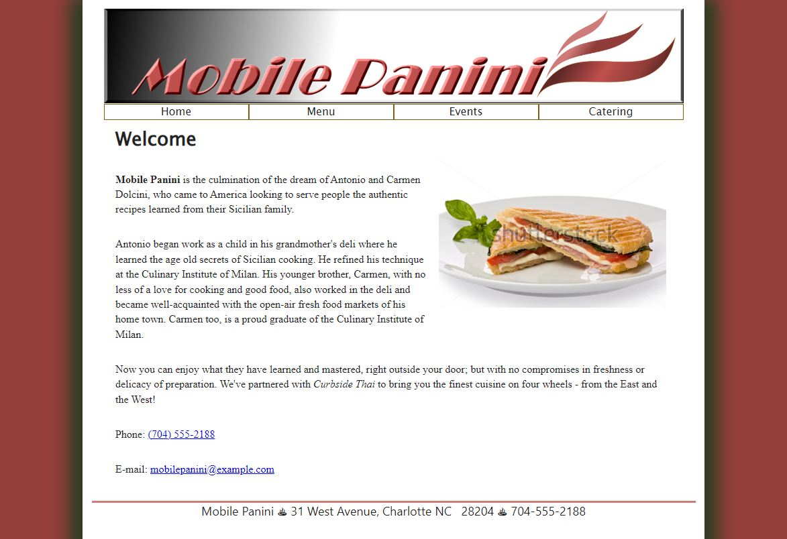
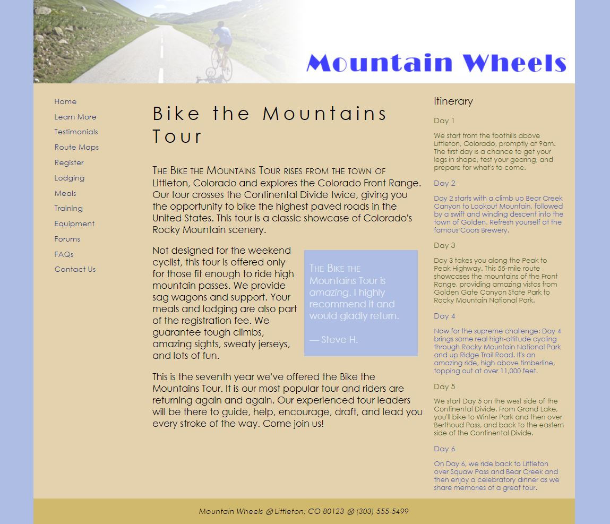

Try It Out Activities
1-2 Mobile Panini
This was an assignment to continue to learn HTML with a litle less guidance.
1-4 Mountain Wheels
This was a website to help us test more of our style skills without having to code the whole website.
2-2 March Specials

This assignment was to continue to help us develop how to layout a page.